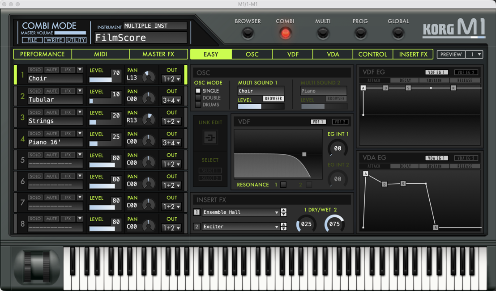

AXWindow M1/1-M1 window

| index_path | window |
| desc_path | window |
| actions | Raise |
| AXActivationPoint | CGPoint(x=234.0, y=129.5) |
| AXCloseButton | <atomacos.AXClasses.NativeUIElement AXButton None> |
| AXFocused | False |
| AXFrame | CGRect(x=184.0, y=120.0, width=1108.0, height=651.0) |
| AXFullScreen | False |
| AXMain | False |
| AXMinimizeButton | <atomacos.AXClasses.NativeUIElement AXButton None> |
| AXMinimized | False |
| AXModal | False |
| AXParent | <atomacos.AXClasses.NativeUIElement AXApplication Live> |
| AXPosition | CGPoint(x=184.0, y=120.0) |
| AXRole | AXWindow |
| AXRoleDescription | floating window |
| AXSections | [{ SectionDescription = Content; SectionObject = "<AXUIElement 0xabb2a9cb0> {pid=60582}"; SectionUniqueID = AXContent; }] |
| AXSize | CGSize(width=1108.0, height=651.0) |
| AXSubrole | AXFloatingWindow |
| AXTitle | M1/1-M1 |
| AXTitleUIElement | <atomacos.AXClasses.NativeUIElement AXStaticText M1/1-M1> |
| AXZoomButton | <atomacos.AXClasses.NativeUIElement AXButton None> |
AXButton window.AXChildren[0]

| index_path | window.AXChildren[0] |
| desc_path | window.AXChildren[0] |
| actions | Press |
| AXEdited | False |
| AXEnabled | True |
| AXFocused | False |
| AXFrame | CGRect(x=189.0, y=127.0, width=9.0, height=5.0) |
| AXParent | <atomacos.AXClasses.NativeUIElement AXWindow M1/1-M1> |
| AXPosition | CGPoint(x=189.0, y=127.0) |
| AXRole | AXButton |
| AXRoleDescription | close button |
| AXSize | CGSize(width=9.0, height=5.0) |
| AXSubrole | AXCloseButton |
| AXTopLevelUIElement | <atomacos.AXClasses.NativeUIElement AXWindow M1/1-M1> |
| AXWindow | <atomacos.AXClasses.NativeUIElement AXWindow M1/1-M1> |
AXButton window.AXChildren[1]
| index_path | window.AXChildren[1] |
| desc_path | window.AXChildren[1] |
| actions | Press, ShowMenu |
| AXEnabled | False |
| AXFocused | False |
| AXFrame | CGRect(x=219.0, y=127.0, width=9.0, height=5.0) |
| AXParent | <atomacos.AXClasses.NativeUIElement AXWindow M1/1-M1> |
| AXPosition | CGPoint(x=219.0, y=127.0) |
| AXRole | AXButton |
| AXRoleDescription | zoom button |
| AXSize | CGSize(width=9.0, height=5.0) |
| AXSubrole | AXZoomButton |
| AXTopLevelUIElement | <atomacos.AXClasses.NativeUIElement AXWindow M1/1-M1> |
| AXWindow | <atomacos.AXClasses.NativeUIElement AXWindow M1/1-M1> |
AXGroup window.AXChildren[1].AXChildren[0]

| index_path | window.AXChildren[1].AXChildren[0] |
| desc_path | window.AXChildren[1].AXChildren[0] |
| AXFocused | False |
| AXFrame | CGRect(x=217.0, y=125.0, width=13.0, height=9.0) |
| AXParent | <atomacos.AXClasses.NativeUIElement AXWindow M1/1-M1> |
| AXPosition | CGPoint(x=217.0, y=125.0) |
| AXRole | AXGroup |
| AXRoleDescription | group |
| AXSize | CGSize(width=13.0, height=9.0) |
| AXTopLevelUIElement | <atomacos.AXClasses.NativeUIElement AXWindow M1/1-M1> |
| AXWindow | <atomacos.AXClasses.NativeUIElement AXWindow M1/1-M1> |
AXGroup window.AXChildren[1].AXChildren[0].AXChildren[0]
| index_path | window.AXChildren[1].AXChildren[0].AXChildren[0] |
| desc_path | window.AXChildren[1].AXChildren[0].AXChildren[0] |
| AXFocused | False |
| AXFrame | CGRect(x=217.0, y=125.0, width=13.0, height=9.0) |
| AXParent | <atomacos.AXClasses.NativeUIElement AXGroup group> |
| AXPosition | CGPoint(x=217.0, y=125.0) |
| AXRole | AXGroup |
| AXRoleDescription | group |
| AXSize | CGSize(width=13.0, height=9.0) |
AXButton window.AXChildren[2]

| index_path | window.AXChildren[2] |
| desc_path | window.AXChildren[2] |
| actions | Press |
| AXEnabled | False |
| AXFocused | False |
| AXFrame | CGRect(x=204.0, y=127.0, width=9.0, height=5.0) |
| AXParent | <atomacos.AXClasses.NativeUIElement AXWindow M1/1-M1> |
| AXPosition | CGPoint(x=204.0, y=127.0) |
| AXRole | AXButton |
| AXRoleDescription | minimize button |
| AXSize | CGSize(width=9.0, height=5.0) |
| AXSubrole | AXMinimizeButton |
| AXTopLevelUIElement | <atomacos.AXClasses.NativeUIElement AXWindow M1/1-M1> |
| AXWindow | <atomacos.AXClasses.NativeUIElement AXWindow M1/1-M1> |
AXStaticText M1/1-M1 window.AXChildren[3]
| index_path | window.AXChildren[3] |
| desc_path | window.AXChildren[3] |
| AXEnabled | True |
| AXFocused | False |
| AXFrame | CGRect(x=714.0, y=122.0, width=48.0, height=14.0) |
| AXInsertionPointLineNumber | 0 |
| AXNumberOfCharacters | 7 |
| AXParent | <atomacos.AXClasses.NativeUIElement AXWindow M1/1-M1> |
| AXPosition | CGPoint(x=714.0, y=122.0) |
| AXRole | AXStaticText |
| AXRoleDescription | text |
| AXSelectedTextRange | CFRange(location=0, length=0) |
| AXSize | CGSize(width=48.0, height=14.0) |
| AXTopLevelUIElement | <atomacos.AXClasses.NativeUIElement AXWindow M1/1-M1> |
| AXValue | M1/1-M1 |
| AXVisibleCharacterRange | CFRange(location=0, length=7) |
| AXWindow | <atomacos.AXClasses.NativeUIElement AXWindow M1/1-M1> |